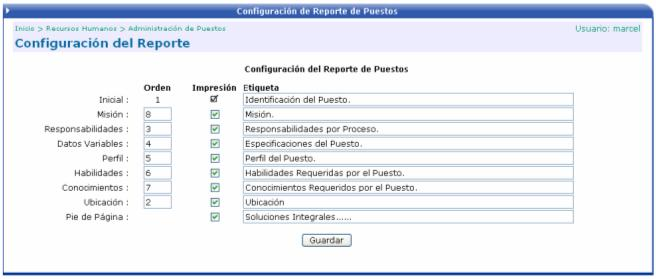
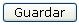

En esta opción se definen los títulos y el orden que va a tener cada una de las secciones en que se divide el documento, a la hora de la impresión o al mostrarse en pantalla.

Orden: orden de cada una de las secciones (misión, responsabilidades, Datos Variables, Perfil, Habilidades, Conocimientos, Ubicación (es el centro funcional donde pertenece el puesto))
Impresión: si esta activo el check, la sección se mostrará en el reporte.
Etiqueta: descripción del titulo de la sección (misión, responsabilidades, Datos Variables, Perfil, Habilidades, Conocimientos).
Luego se presiona el botón

para guardar los cambios realizados.